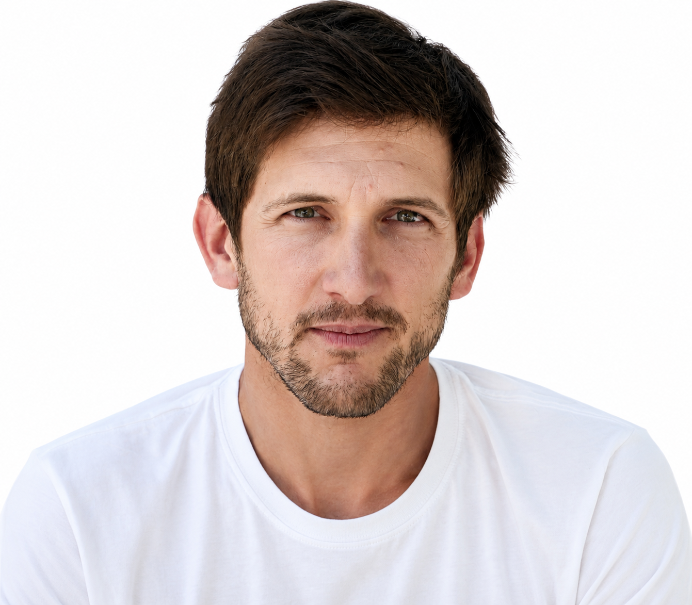

Réalisateur
Timothée Lieby Danion
Emotion — Aventure — Lumière
Photographie
 Portraits
Portraits
 Photos de tournage
Photos de tournage
 Vercors — automne
Vercors — automne
 Alpes — hiver 2023
Alpes — hiver 2023
 Namibie — série Aride
Namibie — série Aride
 Sardaigne — 2023
Sardaigne — 2023
Films

Court-métrage
Après la pluie
Un village normand, deux saisons. Premier film de la série Territoires, 2024.

Documentaire
Voix du fer
Portrait de quatre forgerons d'exception. Sélection festival Cinéma du Réel.

Clip musical
Onde
Clip officiel — Madeleine Roux. Tournage en Super 8, Camargue, 2023.

Showreel
Réel 2024
Sélection de travaux photo et vidéo — année 2024.

Photographe et Assistant Réalisateur basé à Sommières dans le Gard, je travaille depuis 2015 sur les plateaux de tournage en fiction télé. En m'appuyant sur une formation technique solide, une éducation artistique riche et mon expérience aux cotés des réalisateurs et chefs opérateurs qui font la télé d'aujourd'hui, je me lance en 2026 dans la réalisation. Profondément inspiré par les relations humaines, je concentre mon travail sur l'émotion et la lumière naturelle. Passionné d'aventures et de nature, je peux me dépasser pour obtenir l'image, le point de vue que personne n'avait trouvé avant.
Je dispose d'une caméra Nikon ZR avec optiques Nikon, et d'un Stabilisateur Ronin RS4 Pro qui me permettent de filmer des images de la plus haute qualité et dans une immense variété de situations. Disponible pour des commandes éditoriales, des clips, des films de marque et des expositions. Je peux étudier toute forme d'écrit narratif pour en faire un scénario.
Travaillons ensemble
timdanion@gmail.com